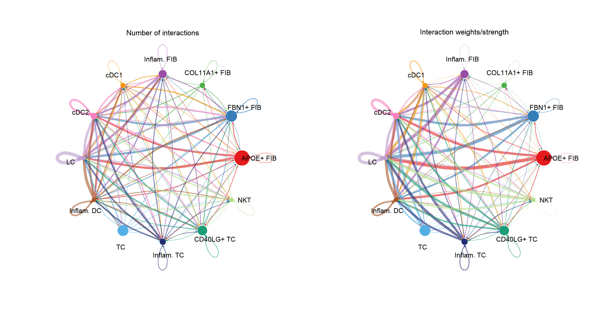
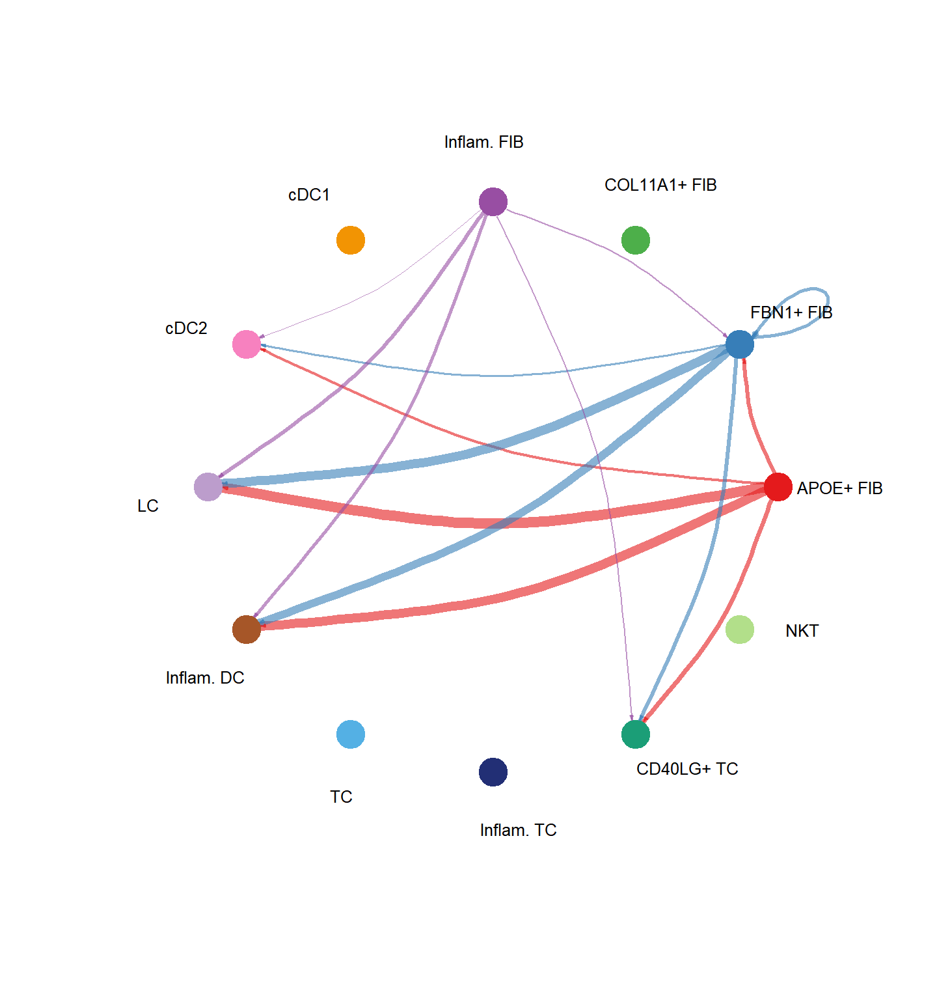
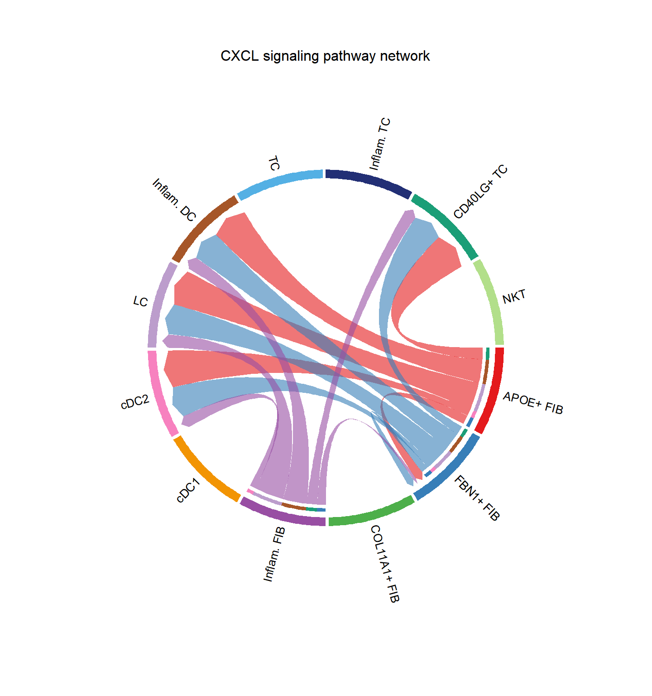
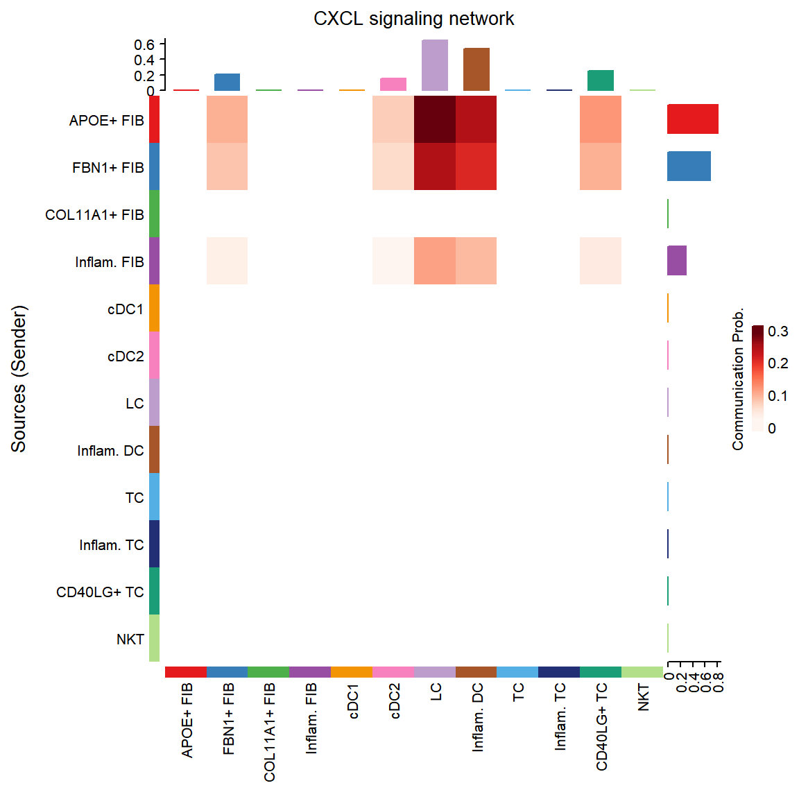
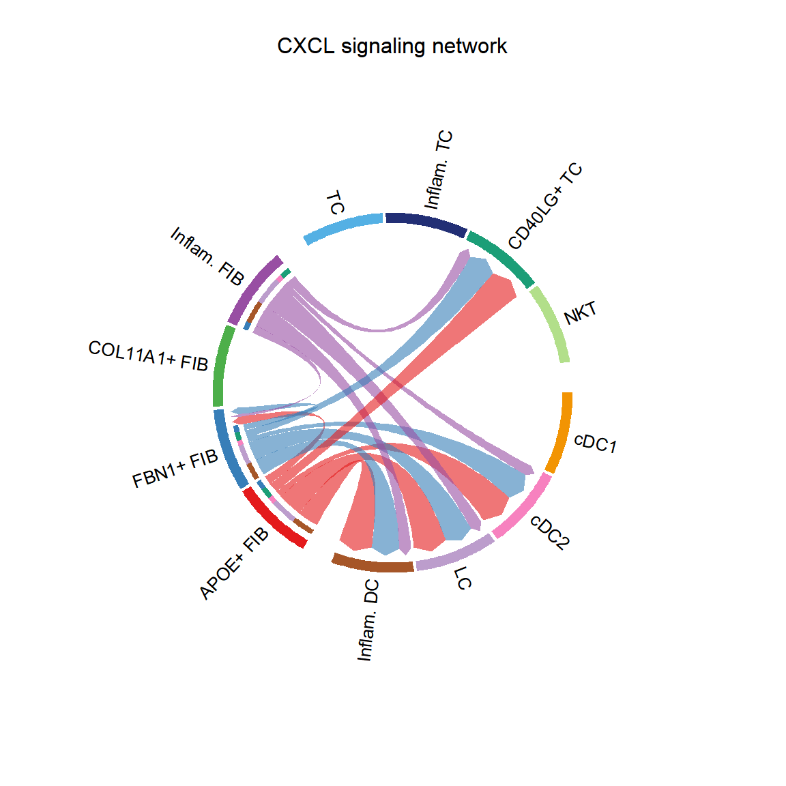
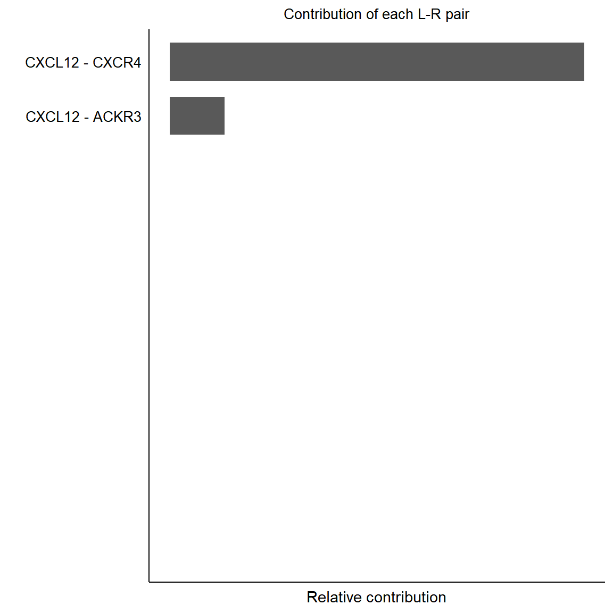
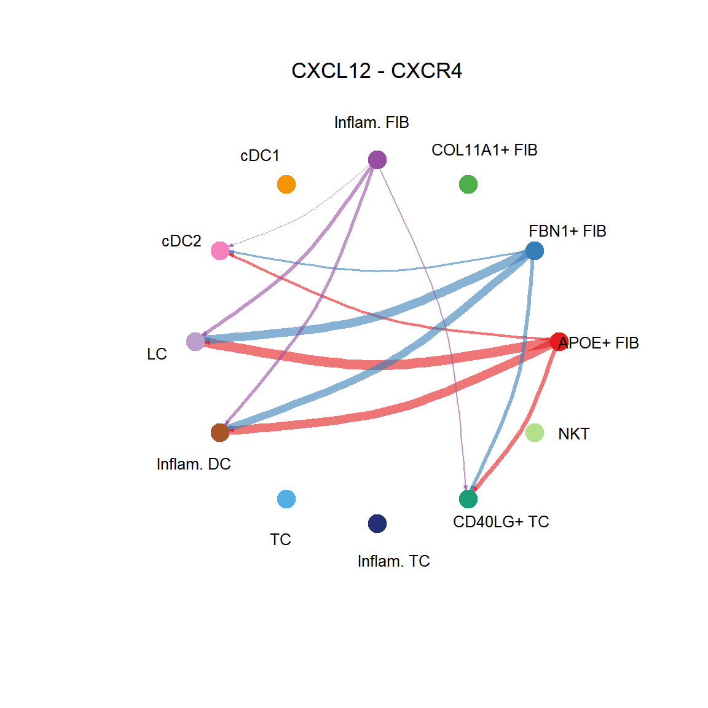
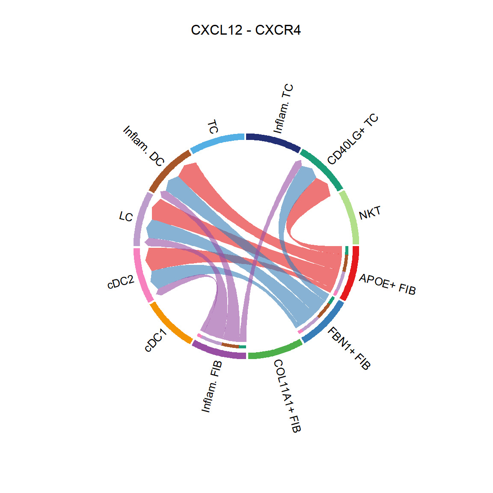
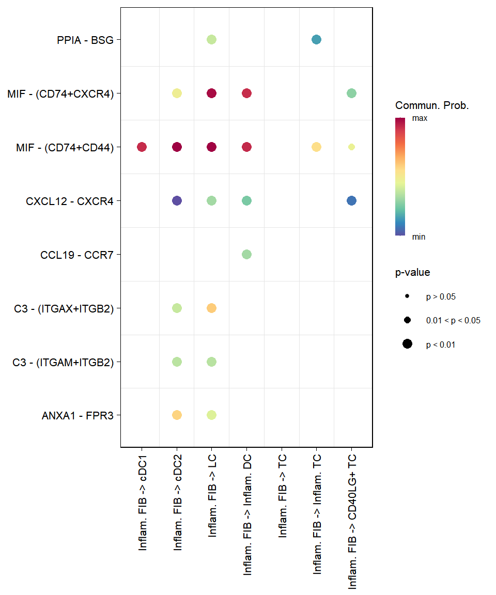

2 Cell-cell communication
2.1 Input
The runCellChat() function requires a SingleCellExperiment object that includes cell clustering information. For details, refer to the Clustering session.
The group parameter should reference a variable within the SingleCellExperiment object that holds the clustering data.
Users can add their own clustering using the following commands:
colData(sce)$group_name <- group
# OR
sce[["group_name"]] <- group2.2 CellChat
Wrapper function for CellChat1.
library(sclet)
library(aplot)
# use demo data from CellChat, hmskin_sce
sce <- qs::qread("data/hmskin_sce.qs")
cci_obj <- runCellChat(sce, group = "labels")## [1] "Create a CellChat object from a data matrix"
## Set cell identities for the new CellChat object
## The cell groups used for CellChat analysis are APOE+ FIB, FBN1+ FIB, COL11A1+ FIB, Inflam. FIB, cDC1, cDC2, LC, Inflam. DC, TC, Inflam. TC, CD40LG+ TC, NKT
## The number of highly variable ligand-receptor pairs used for signaling inference is 693
## triMean is used for calculating the average gene expression per cell group.
## [1] ">>> Run CellChat on sc/snRNA-seq data <<< [2024-10-07 10:13:55.880406]"
## [1] ">>> CellChat inference is done. Parameter values are stored in `object@options$parameter` <<< [2024-10-07 10:16:17.158039]"2.3 visulization
groupSize <- as.numeric(table(cci_obj@idents))
plot_list(
~CellChat::netVisual_circle(cci_obj@net$count,
vertex.weight = groupSize, weight.scale = T,
label.edge= F, title.name = "Number of interactions"),
~CellChat::netVisual_circle(cci_obj@net$weight,
vertex.weight = groupSize, weight.scale = T,
label.edge= F, title.name = "Interaction weights/strength")
)
pathways.show <- c("CXCL")
vertex.receiver = seq(1,4)
# CellChat::netVisual_aggregate(cci_obj, signaling = pathways.show, vertex.receiver = vertex.receiver)
CellChat::netVisual_aggregate(cci_obj, signaling = pathways.show, layout = "circle")


group.cellType <- c(rep("FIB", 4), rep("DC", 4), rep("TC", 4)) # grouping cell clusters into fibroblast, DC and TC cells
names(group.cellType) <- levels(cci_obj@idents)
CellChat::netVisual_chord_cell(cci_obj, signaling = pathways.show, group = group.cellType, title.name = paste0(pathways.show, " signaling network"))

pairLR.CXCL <- CellChat::extractEnrichedLR(cci_obj, signaling = pathways.show, geneLR.return = FALSE)
LR.show <- pairLR.CXCL[1,]
vertex.receiver = seq(1,4)
# CellChat::netVisual_individual(cci_obj, signaling = pathways.show, pairLR.use = LR.show, vertex.receiver = vertex.receiver)
CellChat::netVisual_individual(cci_obj, signaling = pathways.show, pairLR.use = LR.show, layout = "circle")
## [[1]]CellChat::netVisual_individual(cci_obj, signaling = pathways.show, pairLR.use = LR.show, layout = "chord")
## [[1]]